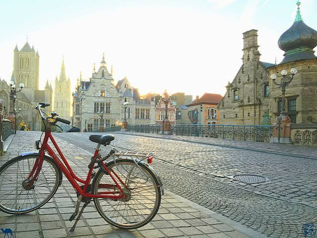

CityLoop Quest Gand


Le centre de Gand se découvre d’abord à pied. La zone piétonne couvre une grande partie du cœur historique, et les principaux monuments se trouvent dans un rayon compact. Les pavés, ponts et rues irrégulières ralentissent cependant le rythme. Des chaussures stables sont préférables, surtout sous la pluie. Les quais peuvent comporter des marches et des bordures sans protection continue ; il faut garder un œil sur l’eau lorsque l’on photographie les façades.
Le vélo est un moyen de transport quotidien plutôt qu’une attraction. Les pistes et rues cyclables permettent de rejoindre rapidement le Citadelpark, les docks, les béguinages et les quartiers périphériques. Les visiteurs doivent respecter les sens de circulation, céder le passage lorsqu’il le faut et ne pas marcher sur une bande cyclable sans regarder. Stationner un vélo contre un monument ou dans un passage étroit peut gêner fortement. Les locations sont nombreuses près des gares et dans le centre.
Les trams et bus de De Lijn relient les gares Gent-Sint-Pieters et Gent-Dampoort au centre. Les itinéraires peuvent évoluer lors de travaux, fréquents dans une ville qui renouvelle ses voies. Il est donc prudent de consulter l’application ou les affichages le jour même. La validation du titre de transport doit être faite selon le support utilisé. Depuis Sint-Pieters, le tram reste souvent plus pratique qu’un taxi aux heures chargées.
La circulation automobile est organisée autour d’une zone à faibles émissions et d’un plan de circulation qui limite la traversée directe du centre. Entrer en voiture sans préparation peut conduire à des détours ou à une amende si le véhicule ne répond pas aux règles. Les parkings relais en périphérie, combinés au tram ou au vélo, sont généralement plus simples. Les parkings souterrains du centre existent, mais leurs accès ne doivent pas être confondus avec les rues réservées.
Les bateaux touristiques offrent un autre point de vue, particulièrement utile pour comprendre les façades tournées vers la Lys. Ils ne remplacent pas la marche, mais révèlent ponts, arrière-cours et niveaux d’eau invisibles depuis les rues. Pour une excursion vers Bruges, Oudenaarde ou Anvers, le train est efficace. Gand se prête donc à une combinaison : arrivée ferroviaire, centre à pied, extension en tram ou à vélo, puis retour le long des quais.
Les gares structurent fortement les déplacements. Gent-Sint-Pieters, au sud, concentre les liaisons nationales et de nombreux trams et bus ; Gent-Dampoort dessert l’est du centre et les quartiers proches des docks. Depuis Sint-Pieters, la marche jusqu’au cœur historique est agréable mais assez longue pour surprendre avec des bagages. Le tram devient alors le choix naturel. Les jours de grands événements, les itinéraires peuvent être déviés : consulter les informations de l’opérateur avant le départ évite d’attendre à un arrêt temporairement déplacé.
L’eau fournit enfin une autre lecture de la ville. Les bateaux touristiques montrent les façades au niveau des anciens quais et révèlent des passages invisibles depuis la rue. Ils ne remplacent pas la marche, car les commentaires et trajets restent concentrés sur les canaux accessibles, mais ils reposent les jambes et aident à comprendre la confluence. Pour les personnes à mobilité réduite, l’embarquement varie selon le bateau et le niveau d’eau ; il vaut mieux demander les conditions exactes. Une combinaison efficace associe un trajet motorisé pour l’approche, une boucle à pied compacte et des pauses assises plutôt qu’une journée fondée sur des correspondances successives.
Le stationnement automobile est volontairement plus simple à l’extérieur du noyau que devant les monuments. Les parkings relais et les correspondances de transport public permettent d’éviter les rues étroites, les zones réservées et les travaux. Un conducteur doit préparer son arrivée, car une décision prise au dernier carrefour peut entraîner une boucle peu intuitive. Pour une excursion régionale, le train reste souvent plus confortable : Bruges, Audenarde, Alost ou Termonde disposent de liaisons qui évitent de chercher une place au cœur historique.